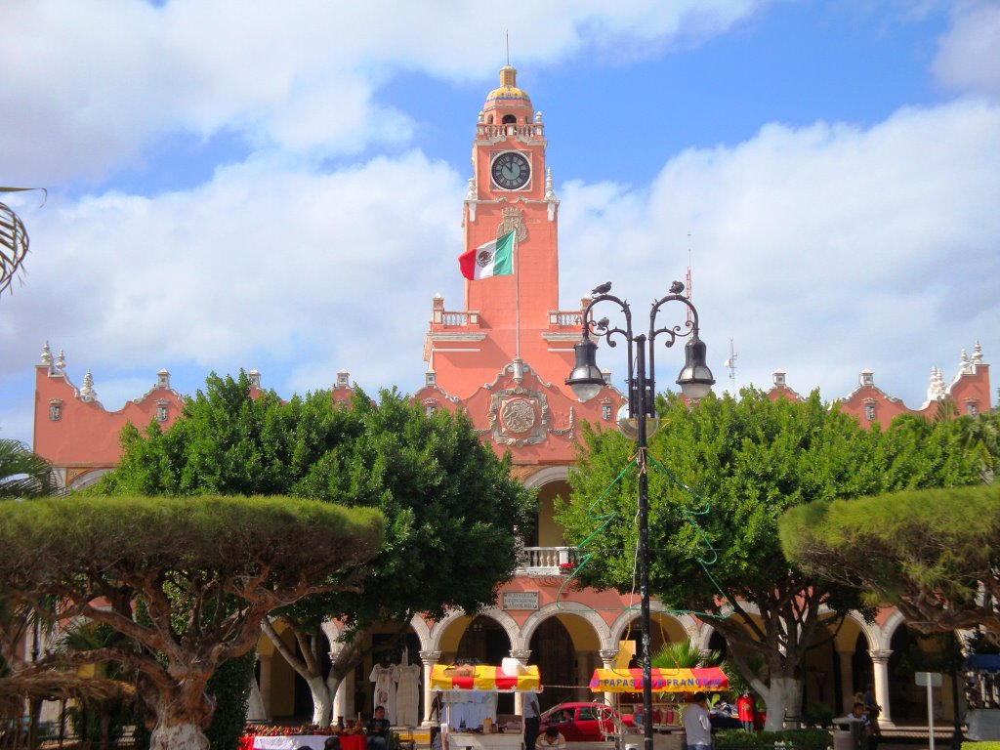
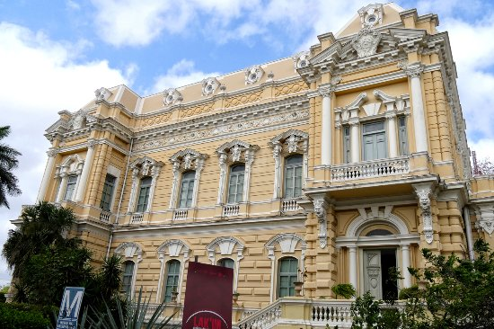

Merida is known as the White City, nowadays one of the most tranquil and safest cities in Mexico. Its remote Mayan roots, superb colonial monuments and the splendor of its turn to the XIX century architecture, has made Merida a captivating mixture of cultural influences.
Palacio Canton is a magnificent building that is home to one of the best Regional Museums about the Yucatan and Mayan culture. It plays double duty to architectural and cultural history. National Institute of Anthropology and History purchased this building that was originally designed for General Francisco Canton in the early 1900 as his residence. The original architecture is untouched and the contents of the museum just as appealing.
